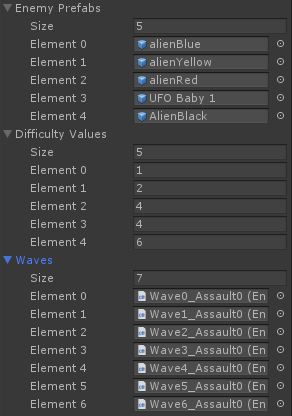

In Block Gun 3D, there are different waves with different types of aliens. These are the enum values with the prefab names (in order from the code):
ALIEN_BLUE (alienBlue)
ALIEN_YELLOW (alienYellow)
ALIEN_RED (alienRed)
UFO (UFO Baby 1)
ALIEN_BLACK (AlienBlack)
DL5 (unknown)
DL6 (unknown)
The hardest (known) alien to kill is ALIEN_BLACK, being the biggest in size too.
DL5 and DL6 are probably either placeholders or just a decompiler error.
Normally, you cannot exit the map. With modding though, you can delete the invisible wall GameObject and go through.
This map has 2 houses, both being the same. The first house, near where you spawn, has flowers at the front. The second house instead has no flowers.
In every side of both houses there's a duplicated door texture. Here's the texture that appears in every side:
UFO Mother is the GameObject name of the big UFO that you can see in the title screen and while playing.
Seeing the UFO Mother while playing is harder, as the Y rotation limit isn't 90.
The alien inside the UFO is the yellow alien, but bigger. The UFO Mother is basically a bigger version of the UFO enemy.